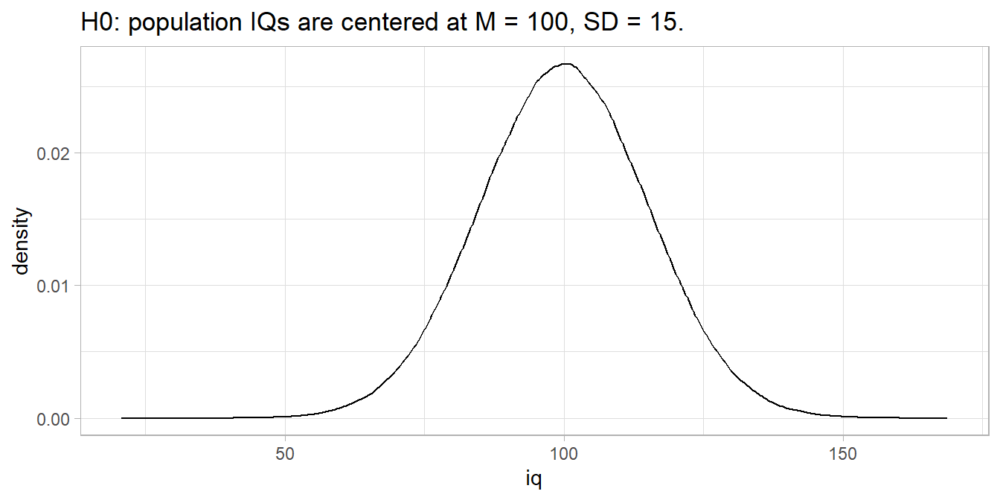
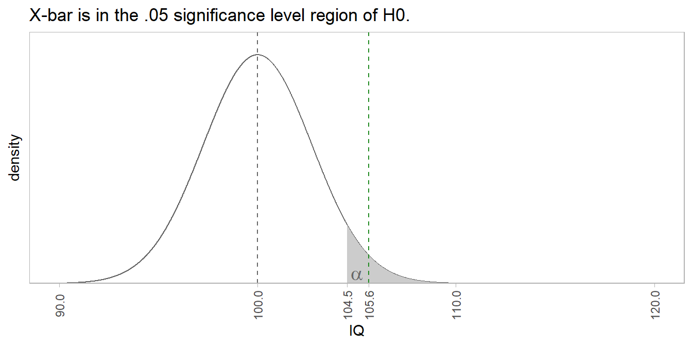

Chapter 2 One-Group Inference Tests
One-group refers to a single population whose metric you are trying to measure. In the case of a quantitative metric, you are typically measuring its mean value. In the case of a count variable, you are typically measuring its proportion.
2.1 One-Group Inference with Numeric Variable
The tests in this section use the sample mean, \(\bar{x}\), as an estimate of the population mean, \(\mu\). The tests apply when the data is independent. Using the normal or student-t distribution, you can create a confidence interval around the estimate, or evaluate an hypothesized population mean, \(\mu_0\). Which test you use depends on what you know about the population distribution (normal vs non-normal) and its variance (known or unknown):
| Normal Distribution | Non-Normal | |
|---|---|---|
| Known Variance | z-test | Wilcoxon Median |
| Unknown Variance | t-test | Wilcoxon Median |
2.1.1 1 Sample z Test for Numeric Var
The z test is also called the normal approximation z test. It only applies when the sampling distribution of the population mean is normally distributed with known variance, and there are no significant outliers. The sampling distribution is normally distributed when the underlying population is normally distributed, or when the sample size is large \((n >= 30)\), as follows from the central limit theorem. The t test returns similar results, plus it is valid when the standard error is unknown, and that is pretty much always. For that reason, you probably will never use this test.
Under the normal approximation method, the measured mean \(\bar{x}\) approximates the population mean \(\mu\), and the sampling distribution has a normal distribution centered at \(\mu\) with standard error \(se_\mu = \frac{\sigma}{\sqrt{n}}\) where \(\sigma\) is the standard deviation of the underlying population. Define a \((1 - \alpha)\%\) confidence interval as \(\bar{x} \pm z_{(1 - \alpha) {/} 2} se_\mu\), or test \(H_0: \mu = \mu_0\) with test statistic \(Z = \frac{\bar{x} - \mu_0}{se_\mu}\).
Example
The mtcars data set is a sample of n = 32 cars. The mean fuel economy is \(\bar{x} \pm s\) = 20.1 \(\pm\) 6.0 mpg. The prior measured overall fuel economy for vehicles was \(\mu_0 \pm \sigma\) = 18.0 \(\pm\) 6.0 mpg. Has fuel economy improved?
The sample size is \(\ge\) 30, so the sampling distribution of the population mean is normally distributed. The population variance is known, so use the z test.
\(H_0: \mu = 16.0\), and \(H_a: \mu > 16.0\) - a right-tail test. The test statistic is \(Z = \frac{\bar{x} - \mu_0}{se_\mu}=\) 1.97 where \(se_\mu = \frac{\mu}{\sqrt{n}} =\) 1.06. \(P(z > Z) =\) 0.0244, so reject \(H_0\) at the \(\alpha =\) 0.05 level of significance.

The \(95%\) confidence interval for \(\mu\) is \(\bar{x} \pm z_{(1 - \alpha){/}2} se_\mu\) where \(z_{(1 - \alpha){/}2} =\) 1.96. \(\mu =\) 20.09 \(\pm\) 2.08 (95% CI 18.01 to 22.17).

2.1.1.1 Example
A random sample of \(n = 16\) Americans measured pounds of beef consumed in a year. Evaluate the hypothesis that the population value is \(\mu_0=115\) pounds.
lbs <- c(118, 115, 125, 110, 112, 130, 117, 112,
115, 120, 113, 118, 119, 122, 123, 126)
n <- length(lbs)
(x_bar <- mean(lbs))## [1] 118.4375## [1] 5.656486## [1] 1.414121\(n < 30\), so only use the t-test if the sample data follows a normal distribution. Test for normality by starting with the assumption that the distribution is normal, \(H_0: normal\), then falsifying the assumption if sufficient evidence exists.
Look for substantial deviations from a straight line. This one looks good.

For a more quantitative analysis, use the Anderson-Darling normality test. The test p-value is the probability of calculating the test statistic if the distribution is normal. The p-value is .88, so do not reject \(H_0\).
##
## Anderson-Darling normality test
##
## data: lbs
## A = 0.19325, p-value = 0.8753The null hypothesis is \(H_0: \mu_0 = 115\) pounds with alternative hypothesis \(H_a: \mu_0 \ne 115\) pounds.
Conduct the t-test. The p-value is less than .05 (just barely!), so reject \(H_0\).
##
## One Sample t-test
##
## data: lbs
## t = 2.4308, df = 15, p-value = 0.02808
## alternative hypothesis: true mean is not equal to 115
## 95 percent confidence interval:
## 115.4234 121.4516
## sample estimates:
## mean of x
## 118.4375lrr = mu_0 + qt(p = alpha, df = n - 1, lower.tail = TRUE) * se
urr = mu_0 + qt(p = alpha, df = n - 1, lower.tail = FALSE) * se
data.frame(mu = 1000:1250 / 10) %>%
mutate(t = (mu - mu_0) / se) %>%
mutate(prob = dt(x = t, df = n - 1)) %>%
mutate(rr = ifelse(mu < lrr | mu > urr, prob, 0)) %>%
ggplot() +
geom_line(aes(x = mu, y = prob)) +
geom_area(aes(x = mu, y = rr), fill = "red", alpha = 0.3) +
geom_vline(aes(xintercept = mu_0), color = "black") +
geom_vline(aes(xintercept = x_bar), color = "blue") +
labs(title ="Two-Tail Hypothesis Test",
subtitle = bquote("mu_0=" ~ .(mu_0) ~
", x_bar =" ~ .(round(x_bar, 1)) ~
", p-value =" ~ .(round(t.test.result$p.value, 4))),
x = "mu",
y = "Probability") +
theme(legend.position="none",
axis.text.y = element_blank(),
axis.ticks.y = element_blank()) 
2.1.1.2 Calculating Sample Size
Determine the sample size required for a maximum error \(\epsilon\) in the estimate by solving the confidence interval equation for \(n=\frac{{t_{\alpha/2,n-1}^2se^2}}{{\epsilon^2}}\) . Unfortunately, \(t_{\alpha/2,n-1}^2\) is dependent on \(n\), so replace it with \(z_{\alpha/2}^2\). What about \(s^2\)? Estimate it from the literature, a pilot study, or using the empirical rule of \(95%\) of range falling within two standard deviations, \(s=\frac{{range}}{{4}}\).
2.1.1.2.1 Example
If the maximum tolerable error is \(\epsilon=3\), and the sample variance is \(s^2 = 10^2\), what sample size provides an \(\alpha=0.05\) conidence level?
alpha = 0.05
s = 10
epsilon = 3
z_crit = qnorm(p = 1 - alpha / 2,
mean = 0,
sd = 1,
lower.tail = TRUE)
(n = ceiling(z_crit^2 * s^2 / epsilon^2))## [1] 43\(n\) varies with confidence level and maximum error.
library(tidyr) # for spread
alpha <- c(.10, .10, .10, .05, .05, .05, .01, .01, .01)
epsilon <- c(1, 3, 5, 1, 3, 5, 1, 3, 5)
dataframe <- data.frame(alpha, epsilon)
dataframe <- dataframe %>%
mutate(z_crit = qnorm(p = 1 - alpha / 2, mean = 0, sd = 1,
lower.tail = TRUE),
n = ceiling(z_crit^2 * s^2 / epsilon^2))
dataframe$z_crit <- NULL
spread(dataframe, key = epsilon, n) %>%
knitr::kable()| alpha | 1 | 3 | 5 |
|---|---|---|---|
| 0.01 | 664 | 74 | 27 |
| 0.05 | 385 | 43 | 16 |
| 0.10 | 271 | 31 | 11 |
2.1.2 1 sample t Test for Numeric Var
The one-sample t test applies when the sampling distribution of the population mean is normally distributed and there are no significant outliers. Unlike the z test, the population variance can be unknown. The sampling distribution is normally distributed when the underlying population is normally distributed, or when the sample size is large \((n >= 30)\), as follows from the central limit theorem.
Under the t test method, the measured mean \(\bar{x}\) approximates the population mean \(\mu\). The sample standard deviation, \(s\), estimates the (always) unknown \(\sigma\). The resulting sampling distribution has a t-distribution centered at \(\mu\) with standard error \(se_\bar{x} = \frac{s}{\sqrt{n}}\). Define a \((1 - \alpha)\%\) confidence interval as \(\bar{x} \pm t_{(1 - \alpha){/}2} se_\bar{x}\), or test \(H_0: \mu = \mu_0\) with test statistic \(T = \frac{\bar{x} - \mu_0}{se_\bar{x}}\).
2.1.3 Wilcoxon 1-Sample Median Test for Numeric Var
This test applies when the variable is not normally distributed.
2.2 One-Group Inference with Categorical Variable
2.2.1 1 Sample z Test for Categorical Var
This test applies when you know the population variance.
2.2.2 1 sample t Test for Categorical Var
This test applies when you do not know the population variance.
2.2.3 Wilcoxon 1-Sample Median Test for Categorical Var
This test applies when the variable is not normally distributed.